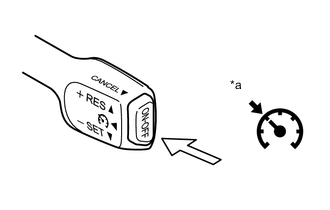
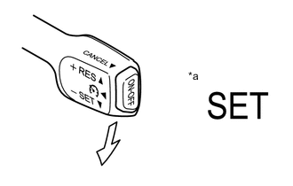
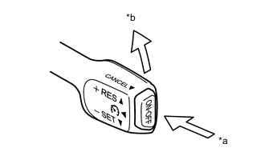
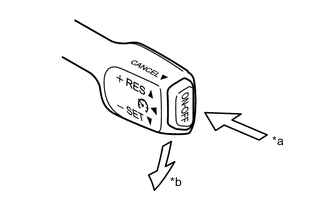
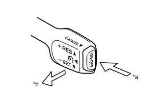
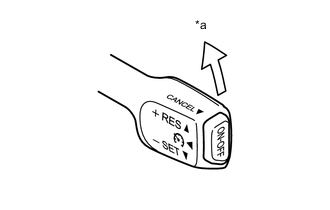

PROBLEM SYMPTOM CONFIRMATION
Inspect the SET function.

| *a | Cruise Control Indicator |
Turn the cruise control system on using the cruise control main switch (ON-OFF button).
Check that the cruise control indicator illuminates in the combination meter assembly.
Drive at a speed between approximately 40 km/h or 25 mph and 200 km/h or 125 mph.

| *a | Cruise Control SET Indicator |
Push the cruise control main switch to -SET.
Check that the cruise control SET indicator illuminates at this time.
After releasing the switch, check that the vehicle maintains the set speed.

| *a | ON-OFF |
| *b | +RES |
Inspect the + (ACCEL) function.
Turn the cruise control system on using the cruise control main switch (ON-OFF button).
Drive at a speed between approximately 40 km/h or 25 mph and 200 km/h or 125 mph.
Push the cruise control main switch to -SET.
Check that vehicle speed increases while the cruise control main switch is pushed to +RES, and that the vehicle maintains the newly set speed when the switch is released.
Push the cruise control main switch to +RES and then release it immediately. Check that vehicle speed increases by approximately 1 km/h or 1 mph (tap-up control).

| *a | ON-OFF |
| *b | -SET |
Inspect the - (COAST) function.
Turn the cruise control system on using the cruise control main switch (ON-OFF button).
Drive at a speed between approximately 40 km/h or 25 mph and 200 km/h or 125 mph.
Push the cruise control main switch to -SET.
Check that vehicle speed decreases while the cruise control main switch is pushed to -SET, and the vehicle maintains the newly set speed when the switch is released.
Push the cruise control main switch to -SET, and then release it immediately. Check that vehicle speed decreases by approximately 1 km/h or 1 mph (tap-down control).
| *a | ON-OFF |
| *b | -SET |
Inspect the CANCEL function.
Turn the cruise control system on using the cruise control main switch (ON-OFF button).
Drive at a speed between approximately 40 km/h or 25 mph and 200 km/h or 125 mph.
Push the cruise control main switch to -SET.

| *a | ON-OFF |
| *b | CANCEL |
When any of the following are performed, check that control of vehicle speed by the cruise control system is canceled and that the normal driving mode (no control of vehicle speed by the cruise control system) resumes.
Depressing the brake pedal.
Moving the shift lever from D to any other position.
Pulling the cruise control main switch to CANCEL.
Turning the cruise control system off using the cruise control main switch (ON-OFF button).
| *a | ON-OFF |
| *b | -SET |
Inspect the RES (RESUME) function.
Turn the cruise control system on using the cruise control main switch (ON-OFF button).
Drive at a speed between approximately 40 km/h or 25 mph and 200 km/h or 125 mph.
Push the cruise control main switch to -SET.
Cancel control of vehicle speed by the cruise control system by performing any of the above operations (other than turning the cruise control system off using the cruise control main switch (ON-OFF button)).

| *a | +RES |
After pushing the cruise control main switch to +RES while driving the vehicle at a speed of more than 40 km/h or 25 mph, check that the vehicle resumes the speed set prior to cancellation is resumed.